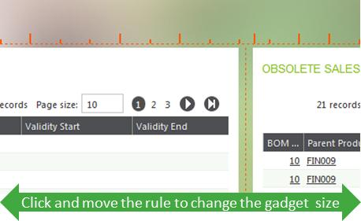
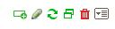

Landing pages
This document describes the global organization of landing pages.
The purpose of a landing page is the following:
* To supply an easy-to-use summarized information such as statistics and reports.
* To propose procedures and guides for users help.
* To simplify the navigation by providing links to different pages that you can access.
* To propose additional services such as search, user preferences, page layout setup, and online help access with a simple menu bar.
As this landing page is a web page, all of the browser shortcuts (access to bookmarks, back and forward buttons, right-click a link to open it in another tab, and so forth) are available.
Connection to the landing page
To open the landing page, you can access an URL and enter the authentication if not already authenticated. At any time, you can return to the landing page page by using the icon on the upper bar:
The characteristics of a connection session are the user identity, role, and language. The role and language are defined by default. The upper bar displays these characteristics and allows changing the role and the language (changing the user requires to log out and log in again).
A user with a given role has access to different landing pages. The last landing page displayed is considered to be displayed for the next connection time. The user can, at any time, select another landing page if the user is entitled to. The authorized landing pages are available on the left landing pages selector:
The landing page selector is organized as a list of links. The links are in two sections:
|
Organization of a landing page
A landing page is a collection of gadgets. A gadget is a component of a landing page that can be connected to an endpoint. The gadgets present in a portal can contain:
- Normal pages if they are built to fit with the size of the gadgets in the portal.
- Visual processes with or without a menu process. This is a special type of page.
- Requests or statistical inquiries. This also corresponds to a page in query mode.
- web pages defined by their URL.
Example of landing pages
| An example of a portal page is provided below and shows different areas: | |
|
|
When a page belongs to the user, five icons are available to allow the page personalization:
|
|
|
|

|
|
|
The upper bar
The upper bar in the dashboard works exactly as in any other version 7 page. The links on this bar are described on the UI upper bar documentation.
Global setup of a landing page
On your landing page, you can click the pen icon in front of the landing page name on the menu list.
This information has also to be entered when a new landing page is created. The information to be entered is:
* A page name and title.
* A check box that defines if the landing page gadgets must use the current endpoint for execution. If this check box is selected, all the gadgets in the dashboard will connect on the current endpoint. If this check box is cleared, the landing page can be used to provide a mashup of information coming from several endpoints. The endpoint is always entered when creating a gadget, but if the check box is selected, the only purpose of the endpoint input is to select the gadgets on the right list.
Adding gadgets in a tab
On your landing page, you can click the + icon to add gadgets in your portal. The different pages appear in this process:
In the first page, after the selection of the endpoint, choose between the different gadgets available:
|
|
Depending on the previous choice, different pages appear. They have all the same type of behavior:
|
|
| Requests selection | |
| Processes selection | |
| Statistics selection | |
| Web pages selection | |
| To search for a given gadget, you have to enter a search pattern. The result is presented in a page like the one displayed below: | |
| After entering the search pattern, the result is presented in a list. Two additional check boxes, per module and category, allow you to refine the search. | |
Set up of a tab
On your landing pages, you can click the setup icon that displays the following bar:
On this bar:
- A "Delete tab" link allows you to delete the current tab.
- An input field allows you to enter the tab title as a translatable text.
- A list of templates displays to allow you to organize the layout of the gadget. This list does not appear if only one gadget is present, and varies depending on the number of gadget as shown on the table below:
| Number of gadgets | List of icons |
|---|---|
| 2 |

|
| 3 | |
| 4 | |
| 5 | |
| 6 |

|
| Over 6 |
The standard templates are intended to propose automatic layouts for the gadgets.
Also, you can manually change the layout by drag and drop of the gadgets at any time when displaying your landing page. To do this, click somewhere on the white title area of the gadget, and move the gadget to its final position as shown in the following screen. The final position is materialized and described in purple:
Moving a gadget on another tab can be done by dropping the gadget on the tab title.
| When multiple columns of gadgets are present, you can change the size of the gadgets by sliding the rules that are made visible if you click the dotted rule that appears when the mouse hovers over the vertical boundary between two gadgets, as shown in the following screen: |  |
Personalization of a gadget
You can change the layout of the gadgets that display data grids if the landing page is yours. If that is the case, the following icon list appears in the upper right corner:

The trash can icon allows you to delete the gadget, a refresh icon allows you to display the gadget, and a "maximize" icon allows you to display the content of the gadget in the entire page.
The "pen" icon enables you to enter, in personalization mode, the gadget. When this happens, the following bar appears:

When at least a numeric column is present, icons are available to set up a graphical representation. The different icons available are:
- A group of icons to select the grid mode that can be a simple grid, a card view, and a combined "inline" card view inserted between the lines. The Inline selector view allows you to choose the relative position of the inlined cardview.
- A graph style selector to select one of the graphical representations. The list is as follows:

* A graph color selector for some graphical representations.
* A selector that defines the relative position of the chart and the graph. The positions are: left, right, top, bottom, front, and behind.
In the grid, you can also move the columns to change their position by dragging and dropping the column titles.
The modifications done occur immediately (there is no need to validate). Click the right upper closing icon of the personalization panel to end the personalization operation.